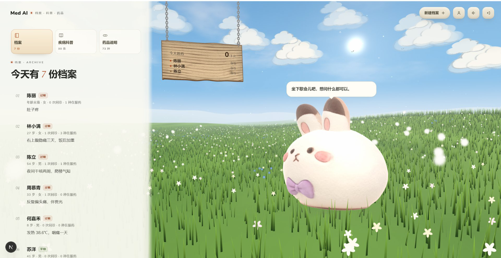
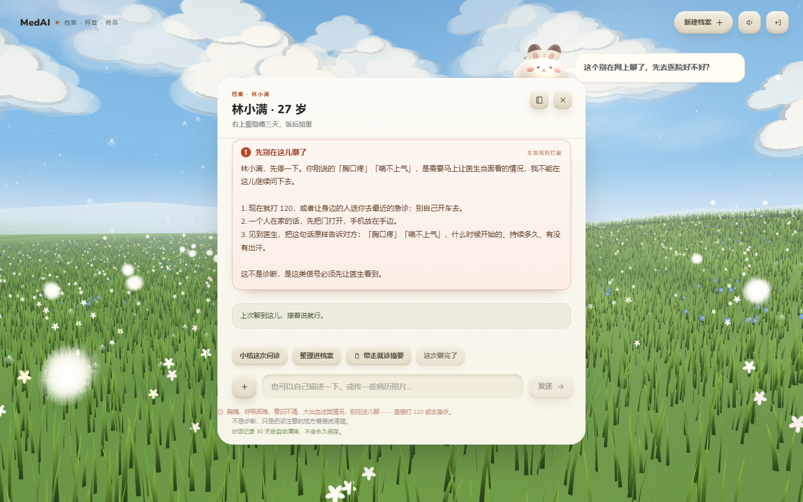
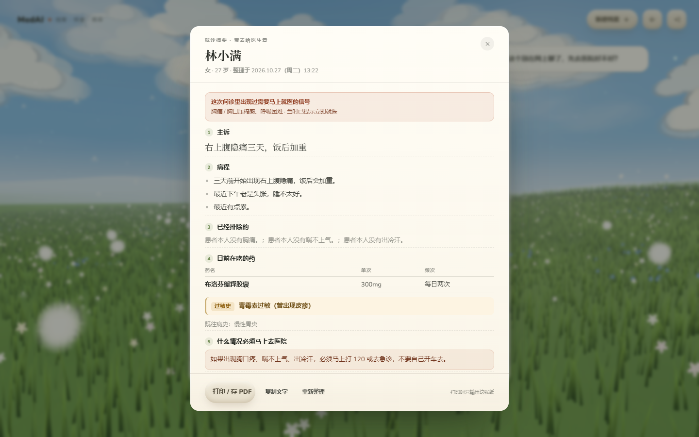
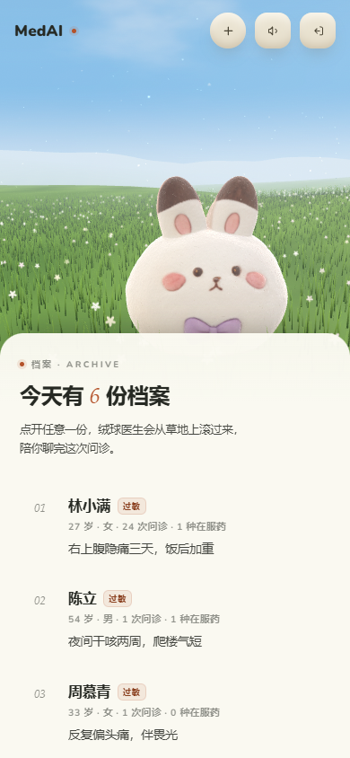

草地上的绒球医生 —— 给每个家庭的一份健康档案
技术文档
| 项目速览 | 内容 |
|---|---|
| 形态 | Web 应用（桌面 / 移动端响应式），可离线私有化部署；含用户端与管理端 |
| 技术栈 | Next.js 16 + React 19 + TypeScript 5.9 + Three.js 0.170 + Prisma 6 + SQLite |
| AI 能力 | 智谱 GLM-4-Flash 流式问诊 + GLM-4V-Flash 看图问诊（双模型按需路由）+ 个体化提示词装配 + 5 个只读工具的 Function Calling + BM25 检索增强与引用脚注 + 11 条本地红旗规则 + 事实核对 + 化验单结构化 + 管理端配置热生效；同一批工具另经 MCP 导出 |
| 内容规模 | 90 条疾病科普 · 73 种药品说明 · 13 个科室 · 18 组自绘 SVG 插图 |
| 代码规模 | 约 3.1 万行（TS / TSX / JS，不含依赖与构建产物）· 33 个 API 路由 |
| 自检覆盖 | 接口 68 项 · 木牌 33 项 · 提醒 20 项 · 登录 18 项 · 入口 8 项 + 意图门控 9 例 · 检索命中 · 5 个工具实机调用 · MCP 握手与工具调用 · 化验单抽取与对比，全部通过 |
MedAI 面向"一个家里谁在管药"这件事。它把家庭成员的档案、在服药物、问诊记录、就诊摘要 收在一个账号里，用一片可以点开的 3D 草地作为入口：家里每个人是一块小牌子，点开就能对话； 天上吊着一块木板，写着全家今天吃了几次药，点一下就能打卡。
产品的边界写得很清楚：不做诊断、不开处方、不替用户判断"哪句话重要"。 AI 只承担三件事 —— 把专业术语翻译成人话、把散落的信息整理成可执行的动作、 把一次问诊整理成一张能带去医院的纸。判断权始终在患者手里。
除用户端外，作品还包含一套平台管理员后台（数据看板、患者管理、问诊记录、 AI 模型配置、系统参数、公告与操作日志）和一条用户反馈闭环 （用户在"我的"页提交意见，管理员在后台处理并回复，全流程落审计日志）。 管理员只能看到统计口径与问诊摘要，看不到对话原文 —— 管理权与隐私边界同时成立。

中国有超过 3 亿的慢性病患者，其中相当一部分是老年人；与此同时，"一个家庭里谁在管药"这件事， 通常落在家里那个二三十岁的年轻人身上。他要记得父母各吃什么药、哪天该复诊、孩子发烧到多少度该去医院， 还要在下班后替父母把"医生说的一堆话"翻译成能执行的动作。
这件事的难处不在于信息不够，而在于信息散落在药盒、纸质病历、微信聊天记录和老人的记忆里。 家里老人吃几种药，子女往往说不全；上一次问诊医生说了什么，一周后基本只剩一句"多喝水"。
| 现有形态 | 它做到的 | 它缺的 |
|---|---|---|
| 手机闹钟 / 药盒提醒器 | 到点响，便宜、可靠 | 只知道"该吃药了"，不知道"谁该吃、吃几片、吃没吃"；换个人就全乱 |
| 医院 App / 互联网医院 | 能挂号、能复诊、有电子病历 | 每家医院一套，跨院不通；面向"这一次就诊"，不面向"这一年" |
| 通用 AI 聊天 | 什么都能问，门槛低 | 没有档案就没有个体化；不了解过敏史、在服药物，建议只能停在科普层面 |
| 健康管理类 App | 功能齐全、数据维度多 | 要填的太多，老人用不了；界面像体检报告，看不下去 |
结论是：缺的不是功能，而是一个"全家共用、一个人维护、老人也看得懂"的容器。 这个容器还必须解决一个矛盾 —— 数据要共享（全家人看得到），隐私不能共享（别人一份都看不到）。
| 角色 | 是谁 | 他真正在意的一件事 |
|---|---|---|
| 主要使用者 | 25–45 岁，家里管事的那个子女 | 爸妈今天吃药了没有；孩子夜里发烧要不要去急诊 |
| 被照护者 | 父母（多为慢病）、老人、儿童 | 不想学新东西；只想知道"现在该干什么" |
| 次要使用者 | 异地子女、家庭护工 | 不在身边也能看到今天的情况 |
| 平台运营者 | 部署方的管理员（学校 / 社区 / 机构） | 知道平台用得怎么样、AI 答得准不准；出了问题能公告、能追溯 |
场景一：早上七点，厨房。手机在灶台边响了一声，兔子在草地上说"该给妈妈吃降压药了"。 用户腾不出手，就把手机架起来点了一下木牌上那一行 —— 打卡完成，板子上的 2/5 变成 3/5。 整个过程两个动作，不用进任何二级页面。
场景二：夜里十一点，孩子发烧。用户打开草地，点孩子的牌子问"39 度，一直哭，要不要去医院"。 系统先做本地红旗判断（有没有抽搐、意识不清、皮疹），再结合档案里的年龄体重和在服药物回答， 最后给出一张可以带走的就诊摘要。
场景三：复诊前一晚。用户点开"病程时间轴"，把这三个月发生的事排成一条轴： 哪天开始吃药、聊过几次、结论卡片写了什么。点"投影视图"，铺成一张白纸，截图或打印， 第二天直接给医生看 —— 不用再凭记忆复述。
三个场景都发生在手机上，而且经常是"一只手、几秒钟、注意力被打断"的状态。 这直接约束了设计：主操作必须在首屏一次点击内完成；文字要大到在油烟和昏暗里也能读； 动画必须能在中低端安卓机上跑得动（见 7.4 性能取舍）。
| 问题 | 现实里的样子 | 我们的做法 |
|---|---|---|
| 吃了没记 | "今天这顿到底吃没吃"—— 老人记不清，子女问不出来，重复服药风险由此产生 | 天上那块木牌：全家今天的用药一屏看完，每一行就是打卡按钮，点一下记为已服、再点撤销， 行内状态与板面文字同时变 |
| 该不该去医院 | 胸痛、呼吸困难、意识不清这类信号，被"再观察观察"耽误；反过来，普通感冒又容易过度就医 | 红旗症状交给本地规则而不是模型：11 条正则命中即中断问诊，画成红卡片并落库， 刷新之后还是红的 |
| 说不清病史 | 复诊三分钟，医生说"上次那个药还吃着吗"，患者答不上来 | 把档案、在服药物、最近 3 次问诊摘要、8 条结论拼成个体化提示词；并把一次问诊整理成 可打印的就诊摘要 |
| 听不懂医嘱 | "窦性心律""幽门螺旋杆菌"—— 名词听懂了，但不知道该做什么检查、什么说法是谣言 | 内置 90 条疾病 + 73 种药品科普，疾病详情里专门有"去医院一般会做哪些检查"和 "流传很广，但不对"两节 |
| 既想共享又怕泄露 | 全家人的健康数据放在一个 App 里，谁都能看，等于没有隐私 | 一个账号多份档案，所有读写都用 ownerId 在一条 SQL 里挡掉越权；
别人的档案和不存在返回同一个 404 |
上面五类问题拆成 10 组功能需求（FR-1 ～ FR-7 与 FR-10 面向用户，FR-8 ～ FR-9 面向平台运营者）。优先级里 P0 是"不做就等于没做"， P1 是"没有它产品不完整"，P2 是"有更好"。
| 编号 | 功能组 | 优先级 | 具体要求 |
|---|---|---|---|
| FR-1 | 账号与数据隔离 | P0 | 注册 / 登录 / 登出；一个账号管多份家庭档案；跨账号的任何读写都必须返回 404 而非 403 |
| FR-2 | 家庭档案 | P0 | 姓名、关系、生日、身高体重、过敏史、既往史、主诉；可编辑、可删除；支持头像 |
| FR-3 | 用药与打卡 | P0 | 用药计划（药名、剂量、频次、起止日期）；今日待服清单；打卡与撤销；全家用药板一屏呈现 |
| FR-4 | AI 问诊 | P0 | 流式对话；回答必须结合档案与在服药物；能查实时数据（今日用药 / 依从率 / 药物相互作用 / 科普库 / 历史问诊），查到的事实要标出处；带图轮次自动切视觉模型读原图；高危症状必须被拦截并给出就医指引；不出现诊断与处方 |
| FR-5 | 科普库 | P1 | 疾病与药品检索；疾病含检查项目与常见误区；药品含起效时间、漏服处理、储存条件 |
| FR-6 | 就诊材料 | P1 | 病程时间轴；就诊摘要（可打印、可复制纯文本）；复诊日历 |
| FR-7 | 资料上传 | P2 | 化验单 / 处方照片 / PDF / Word 上传；本地 OCR；文本可作为对话附件上下文 |
| FR-10 | 化验单管理 | P1 | 拍照或 PDF 上传后抽出指标（名称 / 结果 / 单位 / 参考区间）；自动标出超出参考区间的项；与上一份同类单据逐项对比（在好转 / 在变差 / 新增项）；可删除 |
| FR-8 | 管理后台 | P1 | 数据看板（总览 / 问诊报表 / AI 效果监控）；患者管理（检索、启用禁用、重置密码）；问诊记录只读；AI 模型与系统参数配置；公告管理；操作日志 |
| FR-9 | 用户反馈 | P1 | 用户提交意见（类型 / 内容 / 星级 / 联系方式）并可查看历史；管理员处理、回复、标记状态；用户能看到回复 |
| 维度 | 指标 | 怎么落地 |
|---|---|---|
| 响应速度 | 首屏可交互 < 2.5s（4G 中端机）；红旗判断 < 200ms | 3D 模型加载前有程序化占位体；红旗规则纯本地正则，不经网络与模型 |
| 渲染性能 | 移动端稳定 30fps 以上 | 草用实例化渲染（一次 draw call 画 6 万株）；devicePixelRatio 封顶 1.5 |
| 安全 | 密码不可逆、会话可验签、上传不可执行 | scrypt 加盐哈希；HMAC 签名 Cookie；上传只校验文件头魔数，文件名由服务端生成 |
| 隐私 | 健康数据不外泄，对话不长期留存 | 数据隔离在 SQL 层完成；对话原文 30 天清理；密钥只在服务端环境变量 |
| 合规 | 不诊断、不开方、不替代面诊 | 系统提示词硬约束 + 每条科普页固定"科普不替代面诊" + 红旗强制转诊 |
| 可维护 | 换模型 / 换数据库不改业务代码 | AI 收敛在 lib/ai.ts 一层；数据层换 DATABASE_URL 即可切 Postgres |
| 可部署 | 断网环境可独立运行 | 字体、模型、OCR 语言包全部本地化，无第三方 CDN 依赖；47MB 离线包解压即跑 |
整体是"单页壳 + 服务端路由 + 一层 AI 适配"的结构。用户端浏览器侧只有一片草地和一个问诊面板，
状态集中在 MeadowStage.tsx；管理端是同仓库下的 /admin 控制台与
/me 个人中心；服务端 33 个 API 路由按
"校验输入 → 认门 → 查配置 → 干活"的固定顺序处理，任何一步不过就直接返回。
/api/auth · /api/patients · /api/patients/[id]/lab-reports ·
/api/medications · /api/consultations ·
/api/attachments · /api/notes · /api/growth ·
/api/feedback · /api/admin/*requireUser()，管理接口守卫 requireAdmin()，
所有查询强制带 ownerId
red-flags.ts 11 条）·
提示词装配（medical-prompt.ts + getAiRuntime() 配置热注入）·
事实核对（facts.ts）·
排程与依从性（medication-schedule.ts）·
摘要生成（visit-sheet.ts，纯函数）·
检索（rag.ts，中文 bigram + BM25）·
工具（tools.ts 5 个只读查询）·
Agent（agent.ts 意图门控 + 两轮循环 + 引用编号）·
化验单（lab-report.ts 异常判定与逐项对比，纯函数）·
统计聚合（admin-stats.ts，分科推断与 AI 指标全部由真实数据算出）
lib/ai.ts：OpenAI 兼容协议封装 · 流式 / 非流式 / 视觉 / Function Calling 共用一条通路 ·
90 秒首包超时 · 参数服务端夹紧 · 换厂商只改环境变量fetch 模型，这一层是唯一的出口；
同一批工具另经 scripts/mcp-server.ts 以 MCP stdio 对外提供（只读）
schema.postgres.prisma 已备好，换库只改连接串
| 层 | 选型 | 为什么是它 |
|---|---|---|
| 框架 | Next.js 16（App Router）+ React 19 + TypeScript 5.9 | 同一仓库里既有服务端取数也有客户端交互；Server Component 让档案数据在服务端就按 ownerId 过滤完，不下发整表 |
| 样式 | Tailwind 4 + 手写 CSS 变量 | 3D 转场、木牌投影这类效果需要精确的时间轴和矩阵，纯原子类反而难写 |
| 3D | Three.js 0.170（自写 engine.js） | 草地是实例化渲染 + 顶点着色器风摆，通用编辑器做不出来也带不动 |
| 数据 | Prisma 6 + SQLite | 单机自用场景零运维；换成 Postgres 只需改 DATABASE_URL |
| 模型 | 智谱 GLM-4-Flash（OpenAI 兼容协议，免费版） | 中文问诊语境好、流式免费；封装层不绑定厂商，换模型只改环境变量 |
| 视觉模型 | 智谱 GLM-4V-Flash（OpenAI 兼容协议） | 带图的轮次切视觉模型读原图；没配 Key 时退回本地 OCR 读文字 |
| 认证 | Node 内置 crypto（scrypt）+ HMAC Cookie | 不引认证库，少一个供应链风险；逻辑不到 200 行，可逐行审 |
| OCR | tesseract.js + 本地中文语言包 | 化验单不该上传到第三方识别服务；语言包随仓库走，断网可用 |
| 模块 | 职责 |
|---|---|
lib/auth.ts | scrypt 加盐哈希、HMAC 会话、requireUser() |
lib/medical-prompt.ts | 把档案 / 在服药物 / 摘要 / 结论拼成个体化 System Prompt，带三个 token 上限 |
lib/red-flags.ts | 11 条红旗症状正则，命中即中断，不经过模型 |
lib/facts.ts | diffFacts() 用代码判定冲突，applyFacts() 重新校验后落库 |
lib/visit-sheet.ts | 就诊摘要的结构、清洗、本地模板与纯文本版（纯函数，无副作用） |
lib/medication-schedule.ts | 排程展开与依从性计算，漏服封顶 7 天 |
lib/knowledge-search.ts | 中文检索：归一化 + 多词 AND + 字段权重打分 |
components/meadow/engine.js | 3D 场景：地形、实例草、绒球医生、木牌布局与投影 |
lib/ai.ts | 模型调用的唯一出口（流式 / 一次性 / 视觉 / Function Calling / 运行时参数），视觉调用的 max_tokens 在这一层夹到上游允许的上限 |
lib/rag.ts | 中文 bigram + BM25 检索 163 条科普条目，含字段权重、命中阈值与引用脚注格式 |
lib/tools.ts | 5 个只读工具的声明（JSON Schema）与执行器，对话与 MCP 共用同一份 |
lib/agent.ts | 意图门控 + 最多两轮的工具循环 + 引用编号表；决策失败即降级 |
lib/lab-report.ts / lab-extract.ts / lab-store.ts | 化验单：抽取提示词与解析、异常判定与逐项对比（纯函数）、落库与「较上次」装配 |
scripts/mcp-server.ts | 把同一批工具以 MCP stdio 导出，只读、按 ownerId 隔离 |
lib/settings.ts | 键值配置（Setting 表 + 10 秒缓存），管理端改模型参数 / 问诊规则立即生效；API Key 只从 .env 读并掩码展示，不入库 |
lib/admin-stats.ts / admin-log.ts | 后台统计聚合（分科推断、AI 指标）与审计日志写入（失败不影响主流程） |
lib/feedback.ts | 用户反馈的提交、限流、管理端处理与回复 |
| 表 | 关键字段 | 说明 |
|---|---|---|
| User | email · passwordHash · role · disabled · lastLoginAt | 账号，所有数据的根；role 区分用户 / 管理员，disabled 停用后旧会话立即失效 |
| Patient | name · gender · birthday · allergy · history · chiefComplaint | 家庭档案，一个账号可多份 |
| Medication | name · dose · frequency · startDate · isActive · reminderAt | 在服药物与提醒时间 |
| MedicationLog | medicationId · dateKey · action · at | 一天一次打卡，(medicationId, dateKey) 唯一，重复打卡幂等 |
| Consultation | status · lastMessageAt · summary | 一次问诊会话，关闭时归档 |
| Message | role · content · flag · attachmentId | 红旗消息把 redflag.<kind> 写进 flag，刷新后仍红 |
| Note | content · starred | 结论卡片，只有患者能建 |
| Attachment | path · mime · size · visionText | 化验单 / 处方照片，30 天清理；OCR 文本与图片上下文 |
| Feedback | kind · content · rating · contact · status · reply | 用户反馈：待处理 → 已查看 / 已处理，reply 是管理员的回复 |
| Announcement | title · body · pinned · enabled | 平台公告，支持置顶与启停 |
| AdminLog | actorId · action · target · detail | 后台关键操作的审计记录 |
| Setting | key · value | 系统配置键值对（平台名称、问诊规则、模型参数等）；密钥不入库 |
| LabReport | takenAt · kind · items(JSON) · abnormalCount · summary | 一份化验单的结构化结果；指标存 JSON 而不拆表 —— 项目名与参考区间千差万别，拆表只会得到一张靠字符串关联的松散表 |
这一层是本作品权重最高的部分，也是做取舍最多的地方。三个选题决定了技术路线： 要不要微调、要不要向量库、要不要 Agent 框架。
微调适合"改变说话风格与任务格式"，不适合"让模型知道某个具体患者的过敏史"。 后者属于事实注入，用提示词就能做到，而且改了立刻生效 —— 患者今早刚加的青霉素过敏，下午的对话就必须带上，微调模型做不到这个时效。 另外微调需要构建数据集并承担训练成本，一个家庭的数据量根本不支持。 所以路线是：通用模型 + 结构化事实装配 + 硬约束提示词。
科普库是 90 条疾病 + 73 种药品的短文本结构化条目，不是长文档。 这类语料的查询有两种：一种是"高血压""阿莫西林"这种直接点名的， 另一种是"吃了这个药能不能喝酒"这种带着口语表述的。前者靠精确命中， 后者靠关键词共现 —— 两种都不需要"语义泛化"。
我们的做法是中文二元组（bigram）+ BM25 + 字段权重： 不引词典、不切词，按相邻两字切分（"高血压"→ 高血 / 血压）， 这恰好绕开了中文分词器最麻烦的歧义问题；病名与药名的权重是正文的 3 倍， 命中条目名即置顶；再叠一层别名映射（"烧心"→ 胃食管反流、"甲亢"→ 甲状腺功能亢进） 与全半角、简繁归一。零依赖、可解释、结果稳定 —— 同样一句问法， 今天和明天的检索结果一样，这在医疗语境里比"偶尔更聪明"重要。
检索结果不是整段塞进提示词：命中 3 条以内，每条只取标题、分类与三条要点，
并且在注入时编号，要求模型引用时写 [1]；回答末尾由代码
补一段"参考资料"，编号与注入时完全一致（见 4.4 的引用登记表）。
检索为空时不硬凑 —— 明确告诉模型"科普库没有覆盖，请说明这一点"，不让它拿常识冒充出处。
前半句先承认必要：问诊确实需要"先查再说"。用户问"我今天吃药了吗"， 提示词里静态塞的用药列表可能已经过期；问"这个药和我妈吃的冲突吗"， 得先拿到她的在服药物才能比。这两类问题不查库就只能靠编。
后半句是取舍：不引 LangChain 这类框架。我们需要的只是
"模型返回 tool_calls → 执行 → 结果以 role=tool 回填 → 再问一次"这一个循环，
落在 lib/agent.ts 里不到 200 行，读得完、改得动、没有版本风险。
框架能省的是这 200 行，换来的是抽象层、回调协议与升级成本 ——
对 5 个只读工具来说不划算。
自己写就得自己定规矩，我们定了四条，全部写死在代码里：
| 环节 | 做法 |
|---|---|
| 调用位置 | 只在服务端。密钥存在 .env，浏览器永远拿不到；管理端配置页只显示掩码（DEEPSE***KEY），改密钥写回 .env 并提示重启 |
| 协议 | OpenAI 兼容的 /chat/completions，stream: true；服务端转成 SSE 推给前端 |
| 封装 | lib/ai.ts 抽出 postChat()，流式与一次性调用共用；换厂商只改 baseURL 与 model |
| 双模型路由 | 默认 GLM-4-Flash 处理文本；本轮带图片附件时自动切 GLM-4V-Flash，把原图转 base64 随消息发出 —— 文本模型对图片"装看不见"是条件反射，与其费力纠正，不如让看得见的模型上场；没配视觉 Key 时退回本地 OCR 读文字 |
| 配置热生效 | 模型名、temperature、maxTokens、Prompt 模板、问诊规则都存 Setting 表，管理端保存后 10 秒内生效，
每次对话前经 getAiRuntime() 注入系统提示词 —— 调 AI 不用改代码、不用重启 |
| 工具调用 | 5 个只读工具以 Function Calling 声明（今日用药 / 依从率 / 药物安全核对 / 科普检索 / 历史问诊），
JSON Schema 只写一份（lib/tools.ts 的 CONSULT_TOOLS），对话与 MCP 两边共用 |
| 检索注入 | 提问先用 BM25 检索科普库，命中的 3 条按「标题 + 分类 + 三条要点」注入系统提示词并编号；
回答里出现 [1] 时，末尾「参考资料」按同一张编号表补出处 |
| 失败处理 | 先调模型，流读完且内容非空，才把提问和回答一起写库；Key 错、上游 500、网络断都不会攒出"只有提问没有回答"的记录 |
| 降级 | 无 Key 时 MEDAI_DEMO_AI=1 走本地模拟流，协议与真实调用一致，全链路可演练；就诊摘要另有本地模板兜底，绝不空手 |
每次对话前拼五样东西：① 档案（年龄、体型、血型、过敏史、病史、习惯、主诉） ② 在服药物 ③ 最近 3 条问诊摘要 ④ 星标优先的 8 条结论 ⑤ 本轮 BM25 命中的 0~3 条科普条目（带编号，没有命中就整段不出现）。 前四块各自有 token 上限，总量恒定，不会随对话变长而失控； 超出上限时按"过敏史 > 主诉 > 在服药物 > 摘要 > 结论"的顺序裁剪，把最后的位置留给最重要的信息。
工具说明单独占一条 system 消息，与"正事"那段分开：决策轮带上它、正式作答的流式轮不带。 这样一来，正式回答的提示词和加工具之前逐字一致 —— 工具只影响"查什么"， 不影响"怎么说"，回归问题时能一眼分清是工具的锅还是提示词的锅。
医疗合规三件套永远在场：不下诊断、不开处方；过敏史优先考虑并主动提醒； 涉及处方药必须提示遵医嘱。这三条写在系统提示词最前面，并且不参与裁剪。
| 优化点 | 做法 | 效果 |
|---|---|---|
| 规则前置，先拦后问 | 红旗症状在调模型之前用本地正则判定 | 拦截耗时 126ms，走模型 1646ms；省一次调用，且模型挂了这条生命线照样生效 |
| 首包超时而非全程超时 | 只给"建连 + 首包"设 90 秒上限，拿到响应头就撤计时器 | 话多的正常回答不会被从中间掐断；网络卡死时又不会无限等 |
| 流式渲染 | SSE 逐块推，前端边收边画 | 首字出现时间从数秒降到 1 秒内，长回答的体感差异明显 |
| 本地能力不上云 | 红旗判定、排程计算、科普检索、OCR 全在本地 | 这三类调用量最大，本地化后不产生费用，也不受上游可用性影响 |
| 事实核对人工闭环 | 模型只返回候选事实，一个字不写库；冲突项默认不勾选并红色高亮 | 避免模型"顺着用户说"污染档案，同时把确认成本降到一次点击 |
| 参数范围服务端夹紧 | temperature / maxTokens 等数值配置在写入与读取两端都做范围校验（0–1.5 / 100–4000） | 管理端传错值不会污染对话链路；配置变更全部落审计日志，可追溯 |
| 意图门控，先筛后查 | 进 Agent 之前用一组正则判断"这句话要不要查库"（吃药 / 漏服 / 能不能吃 / 过敏 / 上次说的…） | 纯聊天（"我最近压力大"）不付那次 2~4 秒的工具决策；9 条门控用例逐条验证，该查的都查、不该查的不查 |
| 工具往返有硬上限 | 最多两轮；决策轮温度 0、上限 200 token；不支持 function calling 的模型直接降级 | 最坏情况的延迟与费用可预估，不会出现"模型自己又查了三轮" |
| 引用编号由表统一分配 | 预检索命中的条目先登记，工具后来检索到的接着往后排，回答末尾按同一张表输出 | 模型写 [3] 与用户看到的第 3 条永远是同一份文档，不会两条路径各编一套号 |
| 能算的别让模型算 | 异常项计数、化验小结、对比箭头全部由代码算；模型的自我归纳只作参考 | 实测模型把"白细胞"说成异常项（6.2 在 3.5–9.5 之内），代码算出的是红细胞；表格标 4 项、小结也说 4 项 |
| 统计不编造 | 后台 AI 指标（分诊命中率、采纳率、摘要率）全部由真实数据聚合；无原始数据的口径（分科）用关键词推断并在页面标注统计口径 | 宁可显示"口径：按主诉关键词推断"，也不展示一个没有依据的漂亮数字 |
11 条规则覆盖胸痛、言语不清、抽搐、意识改变、大出血、呼吸困难、高热伴皮疹等急症表述。
命中即中断常规回答，改为固定话术要求立即就医或拨打 120。命中结果写进消息的
flag 字段（redflag.<kind>），刷新之后仍然是红的 ——
安全提示不能被一次页面刷新冲掉。

模型只能返回候选事实（可补字段 / 新增用药 / 与档案冲突）。
其中 fill 与 add 默认勾选，conflict 默认不勾选并红色高亮，
必须患者亲手确认。冲突判定由代码完成，不交给模型 —— 让模型判断"新信息与档案是否矛盾"，
它容易顺着用户说。落库前每条都当不可信输入重新校验：字段白名单、长度上限、
单次 ≤ 20 条、medicationId 按 ownerId 重查。
管理员能运营平台，但不能变成"偷看隐私的后门"。三条边界都写在代码里：
requireAdmin() 守卫，注册接口强制 user 角色，接口层无提权入口；
停用的账号旧 Cookie 立即失效，重新登录返回 403。AdminLog，操作人、对象、详情可追溯。
对话里的 5 个工具，另外封装成一个 stdio 的 MCP server
（scripts/mcp-server.ts，约 170 行）。用
MEDAI_MCP_USER=demo@medai.local npm run mcp 启动后，
Claude Desktop / Cursor 这类客户端可以直接问"我妈今天吃药了吗"，
拿到的是同一份数据、同一套判定。
| 问题 | 我们的答案 |
|---|---|
| 为什么不另写一套 | 工具的 JSON Schema 只写一份：CONSULT_TOOLS 同时喂给模型和 MCP 客户端，
执行仍然走同一个 runTool()。两套实现迟早会漂移成"对话里能查、客户端里查不了" |
| 身份从哪来 | stdio 是本机进程，用环境变量指定账号（MEDAI_MCP_USER）；
工具参数里可带 patient_name，不带就用该账号最早的档案 |
| 越权怎么办 | 权限仍是 ownerId + patientId 两道，与 HTTP 接口同一套查询条件；
stdio 不存在跨用户访问，谈不上把接口暴露到公网 |
| 能改数据吗 | 不能。这一层只导出查询工具，不提供任何写操作 —— 外部客户端接进来也改不了患者的档案、用药和结论 |
| 一层 | 内容 |
|---|---|
| 草地（首页） | 家人档案栏 · 今日用药木牌 · 绒球医生 · 疾病科普 / 药品说明两个入口 |
| 档案详情 | 基本信息 · 在服药物 · 结论卡片 · 问诊记录（日历） · 化验单（含前后对比） · 病程时间轴 · 成长记录 |
| 问诊面板 | 流式对话 · 附件（图片/PDF/Word） · 事实核对 · 就诊摘要 |
| 科普库 | 疾病 90 条（13 科室）· 药品 73 种（10 大类）· 症状搜索 |
| 「我的」页 | 账号信息 · 本机账号列表一键切换 · 意见反馈提交与历史 |
| 管理后台（/admin） | 数据看板（总览 / 问诊报表 / AI 效果监控）· 患者管理 · 问诊记录 · AI 模型配置 · 系统参数 · 公告管理 · 用户反馈 · 操作日志 |
医疗类产品的默认语言是"白底 + 蓝 + 表格"，它传达的是准确，但也传达距离感。
MedAI 选择的是另一种可信：一片有风的草地、一只毛绒绒的绒球医生、一块手写的木板。
颜色取自清晨的草地（#8abfeb 的天空、#2f4a2b 的深绿、奶油色的纸面板），
圆角与黏土质感的按钮（.clay）替代了直角卡片。
目的很实际：让人愿意在深夜打开它。
首次进入是一株 186 颗种子的蒲公英（内联 SVG，无图片请求）。吹散之后 3D 草地才显出来 ——
这不是装饰，是用 1.2 秒把"这是一片能玩的地方"这件事说清楚。看过一次后写入
sessionStorage，返回时在 HTML 解析阶段就打上标记，第一帧直接隐藏，不会闪回开场。
点一份档案，球向右滚 90°、抬头、缩小，左栏左滑消失，问诊面板从右滑到中间 ——
三者共用一条 --flow: 1100ms 的时间轴，同一刻停下，球正好趴在面板上边缘。
球的落点不是写死的坐标，而是把面板的 offsetLeft/offsetTop 反投影回 3D 世界算出来的，
换分辨率、换布局都准。转场进度用墙钟计算而不是累加 dt：低帧率设备上
dt 会被钳到 0.05，那样 1.1 秒会被拖成两三秒，球就和面板错开了。
木牌最初只是"看"的 —— 看全家今天吃到哪了。但看和记之间隔着一个二级页面， 而真实场景里用户根本没空跳转。所以现在卡片里每一行药就是按钮： 点一下调打卡接口，成功后重新拉取整块板子，行内状态、表头计数（2/5 → 3/5）、 3D 板面上的字三处同时更新。
这里有个细节值得一提：打卡后同一个人的名字可能因为排序变化而移动，用户会点错行。 所以卡片打开时会把人名顺序冻结下来，打卡只改状态、不重排。
问诊结束后可以整理成一张 A4 纸：主诉 / 病程 / 在服药与过敏史 / 现在可以先做的 / 何时必须就医 / 想问医生什么。它单独重排了字号和版式（不依赖 flex、色块用真边框）， 用任何工具转 PDF 都不容易变形；同时提供纯文本版，复制到微信里也不会丢掉过敏史。

用户拍一张皮疹、舌象或药盒发进对话，最初的实现是把 OCR 文本注入提示词，结果文本模型
条件反射地回答"我无法查看图片"—— 它确实看不见。改法不是费力纠正提示词，而是
带图的轮次直接切换 GLM-4V-Flash，把原图转 base64 随消息发出。
视觉信息走视觉模型，文字信息走文本模型，两条路在 lib/ai.ts 一层封装里切换，
业务代码无感。实测端到端回答"是的，我可以看到这张图片……"并正确描述内容。
/admin 是侧栏分组的控制台：数据看板（首页总览、问诊数据报表、AI 效果监控）、
用户与权限（患者管理：检索 / 启用禁用 / 重置密码）、问诊业务（问诊记录：症状输入与 AI 分析结论）、
系统配置与安全（AI 模型配置、系统参数、公告管理、用户反馈、操作日志）。
三个实现细节：
disabled，停用账号的旧 Cookie 当场失效，
不等 7 天自然过期；重置密码生成 12 位临时密码，字符集剔除易混淆的 l/1/O/0。用户在「我的」页提交反馈（类型 / 正文 / 满意度星级 / 可选联系方式），提交带限流与最短长度校验； 管理端反馈面板按状态筛选，可以写回复、标记已处理；用户在自己的历史里能看到状态变化和回复内容。 反馈是用户主动写给平台的，后台可读全文；处理动作全部落审计日志。 这个闭环让"收集意见"不是摆设 —— 用户提交后 24 小时内能看到回音，是运营可信度的来源。
子女拿到父母的化验单，往往只能看懂"有个箭头朝上"，看不懂比上个月是好了还是坏了。 这一块就回答两个问题：哪几项超了、比上次往好还是往坏走。流程四步 —— 上传（复用附件通道）→ 视觉模型抽取 → 代码判异常并合成小结 → 落库并与上一份同类单据逐项对比。
提示词里写死了边界：只输出项目名、结果、单位、参考区间四项，不做诊断、不给建议。 这样抽出来的是一张表，而不是一段没法比较的话；合规上也干净 —— 模型没有机会说出"提示轻度贫血、建议复查"这类越界判断。
第一版让模型自己标 abnormal，实测它会把箭头贴错行：白细胞 6.2 明明在 3.5–9.5
之内，被标成"偏低"；真正偏低的红细胞 4.05 反而漏了。于是改成
能算的一律用算术：取结果里的数字、解析参考区间的上下界，超出哪个边界就是哪个方向。
只有定性项目（阴性 / 阳性）或单据没印区间时，才采信模型读到的标记。
小结同理：模型写的那句也数错了（说 3 项异常、把白细胞算进去、漏掉红细胞）， 所以小结改为代码合成 ——"共 8 项，其中 4 项超出参考区间：红细胞计数偏低、血红蛋白偏低、 C 反应蛋白偏高、空腹血糖偏高"。表格标 4 项、小结也说 4 项，两处永远一致。
"较上次"是读的时候算的，不落库。原因很实际：患者补传一张更早的单子， 后面几张的对比对象就全变了；存下来只会得到两张卡片各自声称"上次是 5 月"的矛盾。 判断顺序也有讲究 —— 先看异常状态是否翻转，再看数值方向： 血糖从 7.8 降到 6.9（仍偏高）是"在好转"，只看箭头会得出相反结论； 两项都异常时，则比较"离参考区间有多远"，距离缩短记为好转。
项目按"能用 → 好用 → 敢交"三段推进，每一轮都以"自检脚本全绿 + 真实截图"收尾。 代码按模块分 18 次提交入库，提交信息记录每次改了什么、为什么改。
| 阶段 | 做了什么 | 为什么这一步重要 |
|---|---|---|
| 第 1 周 | 账号体系、档案增删改查、问诊流式对话、AI 提示词装配 | 先把"能不能用"跑通，此时界面还很朴素 |
| 第 2 周 | 3D 草地（实例化草、风摆、绒球医生）、蒲公英开场、点档案的转场 | 产品第一次有了"愿意打开"的理由 |
| 第 3 周 | 红旗症状本地规则、事实核对、就诊摘要、问诊日历 | 把 AI 从"聊天"变成"有边界的工具" |
| 第 4 周 | 用药提醒、木牌、病程时间轴、疾病/药品科普库 | 覆盖"吃、看、说"三个真实动作 |
| 第 5 周 | 木牌上直接打卡、404/错误页、演示入口、打包与离线部署 | 从"能演示"走到"能交付" |
| 第 6 周 | 看图问诊（双模型路由）、管理员后台四组控制台、用户反馈闭环、「我的」页、平台名称全站生效 | 补上"平台运营者"这个角色，产品从单机工具变成可运营的平台 |
| 第 7 周 | BM25 检索与引用脚注、5 个只读工具 + Agent 循环（含意图门控）、MCP 导出、化验单结构化与前后对比 | 把"只会聊"补成"能查、能算、能取证"，AI 部分从提示词工程升级成有工具与检索的应用 |
最初转场进度是把每帧 dt 累加。但引擎里 dt 被钳到 0.05，
30fps 的机器上 1.1 秒的动画会被拖成两三秒，球和面板就错开了。
改成用墙钟计算进度后，无论多少帧，三者都在同一刻停。
木牌的横向位置取自左栏 .records 的右边界，纵向靠相机反投影。
resize 那一帧里，左栏还是手机版宽度、相机还在插值 —— 两个输入都是旧的，板子就摆错了地方。
修法是在 resize 后记一个 1.4 秒的重排倒计时，逐帧重摆，等 CSS 和相机都落定。
这条后来写成了回归断言（切回桌面木牌必须回到原位，误差 < 24px）。
.next/node_modules
分发包解压后 next start 报 Cannot find module。
原因是排除规则里的 node_modules 把 .next/node_modules 整棵剪掉了 ——
那是 Turbopack 给 serverExternalPackages 留的入口（一堆符号链接）。
改法：只剪项目根下的 node_modules，并让遍历跟随符号链接。
这个坑只在"真的解压、真的启动"时才暴露，也是后来坚持做解压验收的原因。
用户拍照发进对话，模型回答"我无法查看图片"。排查发现链路本身没断 —— OCR 文本也确实注入了
提示词 —— 是文本模型对图像话题的条件反射式拒答。与其用提示词反复纠正（不稳定、费 token），
不如换策略：带图的轮次切视觉模型读原图。修复后端到端验证，模型能正确描述照片内容。
顺带把 PRAGMA journal_mode 从 executeRaw 改成 queryRaw
（这条语句会返回结果行，用错了每次启动都抛错）。
七条，共同点是把"该确定的"从模型手里拿回来，只在模型擅长的地方用它。
| 创新点 | 通行做法 | 我们的做法 |
|---|---|---|
| T1 红旗症状不走模型 | 把"是否紧急"也交给大模型判断，靠提示词约束 | 11 条本地正则规则先判，命中即中断问诊并落库。实测拦截 126ms，走模型 1646ms； 模型挂了也不影响这条生命线 |
| T2 冲突判定用代码，不用模型 | 让模型自己判断"新信息和档案是否矛盾"，容易顺着用户说 | diffFacts() 做字段级比对，冲突项默认不勾选、必须人工确认；模型只负责抽取 |
| T3 3D 木牌上贴真字体 | 把文字烘成贴图，缩放就糊；或者干脆用一块 HTML 浮层假装 | 板面文字是 HTML，每帧用单应矩阵贴到板子四角 —— 真字体、任意缩放不糊， 还能被子遮挡、跟着板子摆 |
| T4 提醒有两条通道 | 只依赖系统通知，用户一拒权限功能就废了 | 先让兔子在草地上说一句、蹦一下，有权限再补一条系统通知；人不在页面上时那句话会存着，回来补上 |
| T5 图文双模型按需路由 | 固定用一个模型，图片要么不支持要么全走昂贵的多模态调用 | 纯文字轮次走 GLM-4-Flash，带图轮次才切 GLM-4V-Flash 读原图；切换封装在 AI 层内部， 业务代码无感；没配视觉 Key 时图片退回本地 OCR。成本只花在真正需要"看"的那几轮 |
| T6 工具调用前面加一道"值不值得查" | 每句话都先走一轮工具决策，纯聊天也要多等 2~4 秒 | 先用一组正则做意图门控（吃药 / 漏服 / 能不能吃 / 过敏 / 上次说的），命中了才进 Agent； 进了之后调哪个工具仍由模型自己定。9 条用例逐条验证：该查的查、该直答的直答 |
| T7 同一批工具两种用法 | 工具写在聊天路由里，只有自家页面能用；或者为外部客户端另写一套 | 工具的 JSON Schema 只写一份，对话里用 Function Calling、外部用 MCP stdio 导出，
执行共用 runTool()。两种入口的只读边界与按人隔离由同一份代码保证 |
五条，共同点是把一个动作的完成成本压到最低，而不是增加功能数量。
| 创新点 | 通行做法 | 我们的做法 |
|---|---|---|
| A1 打卡压缩到"一行一次点击" | 提醒 → 跳详情页 → 找到那颗药 → 点"已服用" | 木牌卡片里每行就是按钮，不进二级页面；打卡后行、表头、3D 板面三处同步。 厨房里一只手也能完成 |
| A2 把问诊变成一张能带走的纸 | 聊完就结束，复诊时患者凭记忆复述 | 就诊摘要按 A4 重排版式，可直接打印或复制纯文本；病程时间轴还能铺成投影视图给医生看 |
| A3 一个账号管全家，且互不可见 | 要么一人一号（老人不会注册），要么全部可见（没有隐私） | 一个账号多份档案，越权在 SQL 层挡掉；别人的档案与不存在的档案返回同一个 404， 连"这个 id 存不存在"都问不出来 |
| A4 运营权与隐私边界同时成立 | 管理后台要么没有（出了问题没抓手），要么能看全部对话（隐私形同虚设） | 管理员可停用账号、重置密码、发公告、看统计与 AI 摘要，但接口层就没有对话原文的入口； 用户反馈带回复闭环，意见有去有回；每个后台动作落审计日志 |
| A5 化验单不看箭头，看"比上次" | 把化验单当图片存着，或者只做 OCR 转成一段文字 | 抽出指标后与上一份同类单据逐项对比：哪几项新超标、哪几项在好转、变化多少。 对比每次现算，补传一张更早的单子不会让旧卡片说错话 |
大部分健康类作品的重心在"功能数量"，MedAI 的重心在"一个动作的完成度"： 打卡是两个动作、问诊是一次点击、复诊材料是一张能打印的纸。 另一条差异是边界感：不诊断、不开方、不替用户判断"哪句重要"， 把 AI 放在"整理和翻译"的位置上 —— 这既是合规要求，也是这类产品能长期被信任的前提。
项目没有引入测试框架，但有一套可重复执行的自检脚本，覆盖接口、规则、渲染与交互， 每次改动后跑一遍，输出通过 / 失败计数。当前状态：
| 脚本 | 项数 | 覆盖什么 |
|---|---|---|
scripts/api-test.ts | 68 | 注册登录、越权、档案 CRUD、用药、问诊、事实核对、附件 |
scripts/check-board.mjs | 33 | 木牌位置、卡片明细、打卡与撤销、三处同步、resize 回归、移动端 |
scripts/check-reminder.mjs | 20 | 提醒时间计算、免打扰、漏服封顶、文案 |
scripts/check-login.mjs | 18 | 登录只有邮箱一条路、Cookie、越权拒绝 |
scripts/check-entry.mjs | 8 | 中文 404、错误页出口、演示入口一步进入 |
scripts/knowledge-test.ts | — | 90 条疾病 + 73 种药品的字段完整性与搜索命中（同义词归一） |
| 意图门控用例 | 9 | 该查库的（吃药 / 漏服 / 能不能吃 / 过敏 / 上次说的）判为查，纯聊天判为直答 |
| 工具实机调用 | 5 | 5 个工具各跑一次真实数据，核对返回字段与冲突标记 |
| MCP 握手与调用 | 4 | initialize / tools.list / 3 次 tools.call，按 MCP 标准客户端验证 |
| 化验单抽取 | — | 一张血常规样张：8 项抽取、4 项异常判定、与上一份逐项对比（含数值/百分比/方向） |
tsc --noEmit / eslint . | 0 错误 | 类型与规范 |
交付前不看清单看行为：解压到独立目录 → npm ci → prisma generate →
db push → 起服务 → 跑一遍登录、建档、加药、打卡、科普库。
只有这一遍走通了才算"能交付"。
findFirst({ where: { id, ownerId } })），
不做"先查再比对"，避免从响应差异确认某个 id 是否存在。randomUUID 生成，不采信用户文件名。patientId 一律按 ownerId 重查，
模型无法通过工具改档案、加药或写结论 —— 写作一律走患者的显式操作。requireAdmin() 守卫；注册接口强制 user 角色，无提权入口；
停用账号的旧 Cookie 立即失效；管理员账号不可被停用或重置；后台写操作全部落审计日志。| 方式 | 适用场景 | 步骤 |
|---|---|---|
| 本机直跑 | 演示、答辩现场（无需外网） | npm ci → prisma generate → prisma db push → npm start；
Windows 双击 Start MedAI.bat 即可，首次运行会自动补齐这四步 |
| Docker | 交付给机构、社区医院 | docker compose up -d；多阶段构建，产物只留 standalone 所需文件 |
| Caddy 反代 | 公网在线演示（可选加分项） | Caddy 负责 HTTPS 与反代，容器内只监听内网端口，证书自动申请 |
| 离线包 | 网络受限环境 | 47MB 离线包（含 .next 与 prisma client）解压即跑，无第三方 CDN 依赖 |
数据备份用 npm run db:backup：WAL 模式下直接 cp 会漏掉还在
-wal 里的数据，所以改用 VACUUM INTO 导出一致性快照，导出后重开校验表存在。
七周时间，做了五件事：一个能管全家的档案容器、一个有边界的 AI 问诊、 一个愿意被打开的外壳、一条能运营、能听到回音的通路（管理后台与反馈闭环）， 以及一套能查、能算、能取证的 AI 能力（工具调用、检索与出处、化验单前后对比）。 前两件是功能，第三件是这类产品能不能被用起来的前提 —— 一个需要教三遍才会用的健康 App，老人第二天就不会再点开。
技术上最值得记的不是用了什么框架，而是几条约束： 安全判断不交给模型、冲突判定不交给模型、结论生成不交给模型， 异常项计数与化验小结也不交给模型 —— 能算的都自己算。 这些约束让产品的行为可预测、可解释、可审计，代价是少了几个"看起来很 AI"的功能； 但换来了另一种东西：当模型说"3 项异常"而表格标了 4 项时，我们不需要争论，代码说了算。
| 阶段 | 对象 | 怎么用 |
|---|---|---|
| 一、家庭自用 | 有慢病老人的家庭、有小孩的家庭 | 一个账号管全家，免费；核心价值是"今天吃药了没有"和"这次要不要去医院" |
| 二、社区 / 家医签约 | 社区卫生服务中心、家庭医生团队 | 就诊摘要可以直接作为签约居民的随访材料；医生不用再问一遍用药史 |
| 三、机构合作 | 药企患者服务、慢病管理公司、养老机构 | 私有化部署（Docker + SQLite/Postgres），数据不出机构 |
技术上，模型层已经解耦（换厂商只改环境变量），数据层一条 DATABASE_URL 就能切 Postgres，
部署有三条路线（本机 / Docker / Caddy 反代）。
成本上，单用户每次问诊的模型开销是可控的（历史 20 条 + 摘要 3 条 + 结论 8 条的固定上限），
红旗判断、排程、科普检索全部在本地完成，不产生调用费用。
更重要的是它足够小：不依赖任何第三方健康数据接口，一个 47MB 的离线包解开就能跑。 这意味着它可以被送进网络条件一般的社区医院，而不是只能活在演示视频里。

| 名称 | 许可 / 性质 | 用途 |
|---|---|---|
| Next.js / React | MIT | 应用框架与渲染 |
| Three.js | MIT | 3D 场景渲染 |
| Prisma | Apache-2.0 | ORM 与迁移 |
| Tailwind CSS | MIT | 样式工具 |
| tesseract.js | Apache-2.0 | 化验单 / 处方照片的本地 OCR |
| Nunito | SIL Open Font License | 界面西文字体 |
| DeepSeek / 智谱 GLM API | 商业服务 | 问诊对话与摘要生成（文本 GLM-4-Flash · 视觉 GLM-4V-Flash，OpenAI 兼容协议，可换厂商） |
| 绒球医生模型 | 团队自制（AI 图生 3D） | public/models/rabbit.glb，以网络公开 2D 插画为参考，经在线图生 3D 平台生成，仅用于本项目形象演示；加载失败时回退到程序化占位模型 |
科普内容（90 条疾病、73 种药品）由团队依据公开诊疗指南与药品说明书整理， 每条标注来源与整理月份，正文不含任何处方建议，页面底部固定一句"科普不替代面诊"。 界面中的插图（18 组科室线稿）为团队自绘 SVG，不含第三方图片素材。
| 项目 | 说明 |
|---|---|
| 运行环境 | Node.js ≥ 20；Windows 双击 Start MedAI.bat，
或 npm ci && npx prisma generate && npx prisma db push && npm start |
| 默认端口 | 生产 3100（npm start -- -p 3100）；开发 3200 |
| 演示账号 | 个人用户 demo@medai.local / Medai@2026
（含 6 份家庭成员档案、在服药物与问诊记录）；管理员 admin@medai.local / Admin@2026
（进入 /admin 控制台，可查看统计、公告与反馈面板） |
| 无 Key 演示 | .env 里 MEDAI_DEMO_AI=1 时走本地模拟流，协议与真实调用一致 |
| 一键体验 | MEDAI_DEMO_LOGIN=1 时登录页出现"用演示账号直接进去" |
| 环境变量 | 见仓库根目录 .env.example，含数据库、会话密钥、模型、保留天数全部配置项 |
源码规模：约 3.1 万行（TypeScript / TSX / JS，不含依赖与构建产物）；33 个 API 路由；90 + 73 条科普内容。